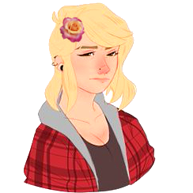
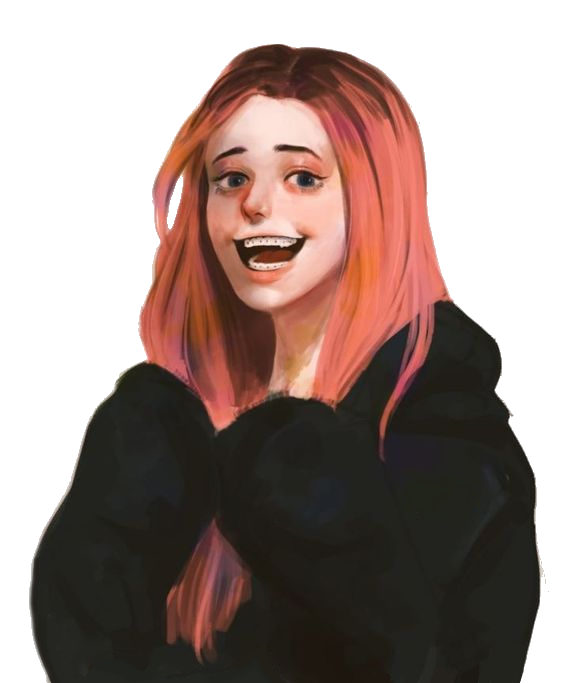

"Woof"
Title: The Dog
Full Name: Scruffy the Dog
Nicknames: Scruff
Birthday: Also unknown
Age: Unknown
Race: German Shepherd
Height: About up to their thighs
Status: Alive and petted
Job: Illegal therapy dog for Legion
Affiliations: Legion
Early Life
As a pup he was neglected and abused by his alcoholic owner, soon being taken away and put in an animal shelter to find a loving home.
Current Life
Once adopted by Frank and Julie, he now lives a flourising life filled with treats, pets and (unfortunately) bows. They're his favourite owners so he protects them with his life and helps them feel better when they're sad.
Personality
Skills
Fighting dream demons, therapy and giving judging looks
Strengths
Smart, agile and loyal
Weaknesses
If reminded of his previous owner he can become scared and lose his confidence
Hobbies
Being a therapy dog, giving condoms to Frank and Julie, being a lazy dog and eating food
Loves
Belly rubs, the fireplace and digging holes
Likes
Quentin, treats, pets and food
Dislikes
Bows, baths and the TV
Hates
The smell of alcohol, yelling, drunk people and people hurting his owners
Physical Looks
He's a fairly common looking brown and black dog but he has heterochromia, one eye brown and the other a light grey
Clothes
Susie often tortures him with pink bows and ballerina skirts.
How they met: He met Frank at the animal shelter and they clicked straight away
Personal Sentiments: While he'd defend Frank with his life, he wishes he would give up the alcohol because it reminds him of the past too much.
Extras: Smarter than he seems, Scruffy understands a lot of Franks issues and he tries his best to help him.
How they met: They met when Frank took Scruffy home for the first time
Personal Sentiments: To him, Julie is like a pack leader so he looks up to her and does as she wishes.
Extras: He likes her scritches the most
How they met: He met Susie when he went to Val's house for the first time
Personal Sentiments: She always puts him in bows and skirts. He looks terrible in them.
Extras: One day, he'll put a bow on HER.
- Basically their ESA at this point.
- Surprisingly good at fighing dream demons